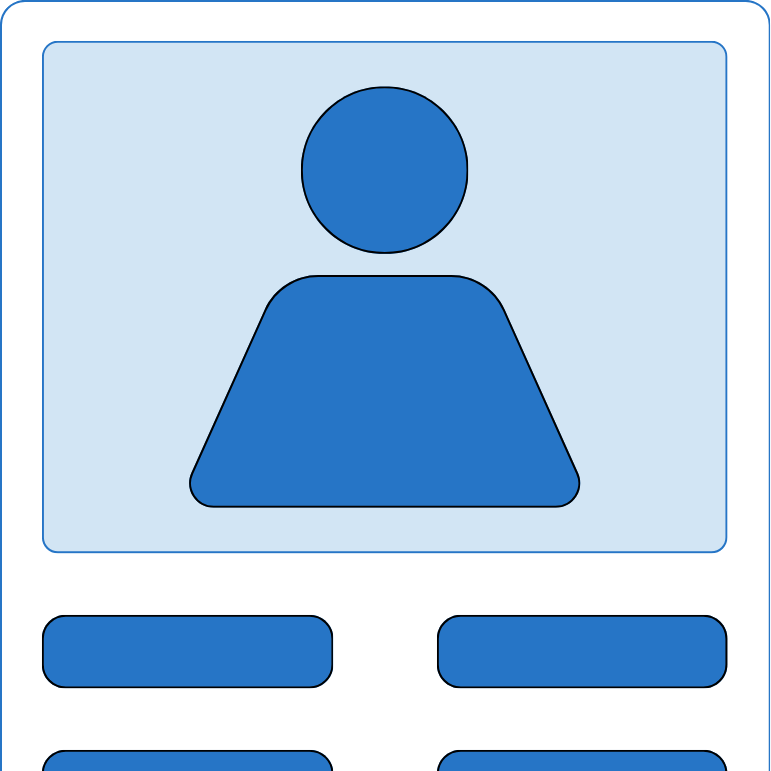

iPhone, iPad, and Mac
Search, filter, and print your contacts.
Contacts Printer works directly with Apple Contacts so you can quickly narrow the list, choose what to include, and print a compact grid without exporting your data.

What It Does
Search your contacts, filter to the fields you need, and hide entries that do not match.
Select specific contacts, edit them in place, and print a dense multi-column page that stays readable.
Support
Need help? Send your device, OS version, and a short description of the issue.
Privacy
Runs on-device with no accounts, no analytics, no tracking, and no contact data leaving your device.
No data is collected or shared.